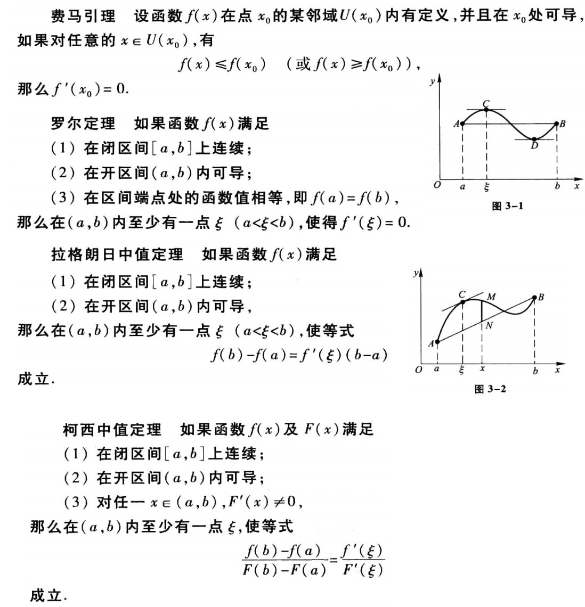
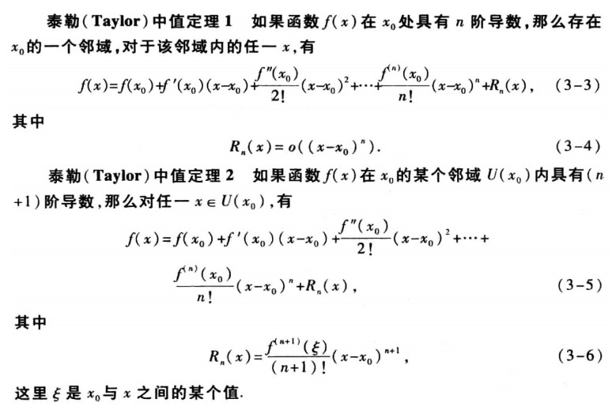
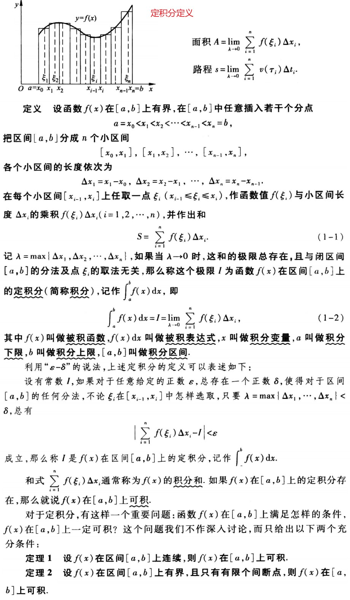
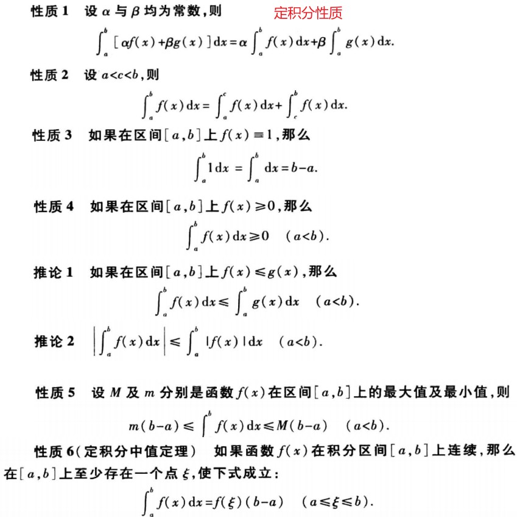
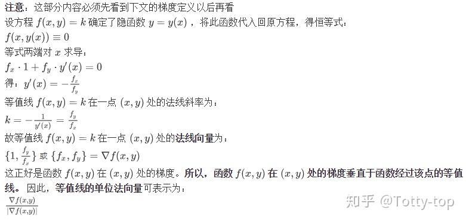

advanced mathematics
Table of Contents
同济大学高等数学读书笔记。
<!– more –>
advanced mathematics
函数与极限
导数与微分
函数的求导法则
基本求导法则与导数公式

函数的微分
微分的定义

微分的几何意义
△x 无限接近于 0 时，△y = y'△x

基本初等函数的微分公式与微分运算
从函数的微分的表达式 dy=f'(x)dx 可以看出，要计算函数的微分，只要计算函数的导数，再乘自变量的微分。


微分中值定理与导数的应用
微分中值定理

洛必达法则
泰勒公式

不定积分
不定积分的概念与性质
原函数与不定积分的概念

基本积分表

定积分
定积分的概念与性质


微积分基本公式

- 原函数的概念 原函数的概念
- 牛顿莱布尼茨公式 牛顿莱布尼茨公式(微积分基本公式)
- 格林公式 格林公式
- 高斯公式 高斯公式
定积分的换元法和分部积分法
反常积分
再一些实际问题中，常会遇到积分区间为无穷区间，或者被积函数为无界函数的积分。这类函数的积分被称为反常积分。
反常积分的审敛法Γ函数
定积分的应用
微分方程
微分方程的基本概念

可分离变量的微分方程

齐次方程
齐次方程

可化为齐次的方程

- 齐次方程的「齐次」代表什么？ https://www.zhihu.com/question/23599338/answer/579775239
一阶线性微分方程
线性方程

伯努利方程

可降阶的高阶微分方程
第一种

第二种

第三种

高阶线性微分方程
二阶线性方程

线性微分方程的解的结构

常数变易法


常系数齐次线性微分方程


常系数非齐次线性微分方程
欧拉方程
常系数线性微分方程组解法举例
向量代数与空间解析几何
多元函数微分法及其应用
多元函数微分法的基本概念
平面点集和 n 维空间
平面点集
- 坐标平面
二元有序实数组(x,y)的全体就是坐标平面，即 R^2 = R x R = {(x,y) | x,y ∈ R}
- 平面点集
坐标平面上具有某种性质 P 的点的集合，称为平面点集，记作 E={(x,y) | (x,y)具有性质 P }
- δ邻域
设 P0(x0, y0)是 xOy 平面上的一个点，δ是某一正数。与点 P0(x0, y0)距离小于δ的点 P(x,y)的全体，称为 P0 的δ邻域,记作 U(P0,δ)，即 U(P0, δ)={P | |PP0|<δ }
- 点和点集之间的关系
内点 属于集合，且不在边界上的点
外点 不属于集合，且不在边界上的点
边界点 在边界上的点
聚点 属于集合或在边界上的点
- 平面点集分类
根据点集所属点的特征，对平面点集进行分类:
开集 点集 E 的点都是 E 的内点，则 E 为开集。（E的边界点都不属于 E）
闭集 点集 E 的边界都属于 E，则 E 为闭集
连通集 点集 E 内任何两点，都可以用折线联结起来，且该折线上的点都属于 E，则 E 为连通集
区域(开区域) 连通的开集称为区域或开区域
闭区域 开区域连同它的边界一起所构成的点集称为闭区域。（连通的闭集即为闭区域）
有界集 点集有界限为有界集
无界集 点集无界限为无界集，一个集合如果不是有界集就为无界集。
n 维空间
将上面概念映射到 n 维空间。
多元函数的概念
多元函数的极限
多元函数的连续性
偏导数
偏导数的定义及其计算法
高阶偏导数
全微分
全微分的定义
偏增量
偏微分
全增量
全微分


全微分在近似计算中的应用
多元复合函数的求导法则
全导数

一元函数与多元函数复合的情形

多元函数与多元函数复合的情形

其他情形

隐函数的求导公式
一个方程的情形

方程组的情形


运用雅可比矩阵可以在局部使用线性变换近似非线性变换。
新空间中 x 方向的微小变化，对应了原始空间中 x 方向和 y 方向的微小变化。
- 《雅可比矩阵是什么东西》3Blue1Brown https://www.bilibili.com/video/av79626296/
- 上面视频中非线性变换的图示 https://www.desmos.com/calculator/o33iibdvar
- 理解雅可比矩阵 https://www.matongxue.com/madocs/255


方向导数与梯度
方向导数


梯度
梯度为向量。该向量的各个分量为函数的偏导数。
如果函数 f(x,y)在点 P0(x0,y0)可微分，el=(cosα,cosβ)是与方向 l 同向的单位向量，那么 f(x,y)在 P0 点处沿着 el 方向的方向导数为 f(x,y)在该点的梯度和 el 向量的点积。

方向导数是各个方向上的导数
偏导数连续才有梯度存在
梯度的方向是方向导数中取到最大值的方向，梯度的值是方向导数的最大值。
- 如何直观形象的理解方向导数与梯度以及它们之间的关系？ https://www.zhihu.com/question/36301367 https://www.matongxue.com/madocs/222/
等值线

等值线的法线 如果偏导数不同时为 0，则等值线 f(x,y)=c 上任一点 P0(x0,y0)处的单位法线量为该点梯度对应的单位向量。

数量场
如果对于空间区域 G 内的任一点 M，都有一个确定的数量 f(M)，那么称在这空间区域 G 内确定了一个数量场（例如：温度场，密度场等）
向量场
如果与点 M 对应的是一个向量 F(M)，那么称在这空间区域 G 内确定了一个向量场（例如：力场，速度场等）
一个向量场可以用一个向量值函数 F(M)来确定，而 F(M) = P(M)i + Q(M)j + R(M)k,其中 P(M),Q(M),R(M)是点 M 的数量函数。
若向量场 F(M)是某个数量函数 f(M)的梯度，则称 f(M)是向量场 F(M)的一个势函数，并称向量场 F(M)为势场。
- 方向导数与偏导数有什么联系？ https://www.zhihu.com/question/329468642
多元函数的极值及其求法
多元函数的极值及最大值与最小值
条件极值 拉格朗日乘数法

二元函数的泰勒公式
最小二乘法
重积分
二重积分的概念与性质
二重积分

二重积分性质

二重积分的计算方法
三重积分

重积分的应用
曲面的面积

含参变量的积分
曲线积分与曲面积分
对弧长的曲线积分
对弧长的曲线积分的概念和性质


对弧长的曲线积分的计算法

对坐标的曲线积分
对坐标的曲线积分的概念和性质
下图为引入概念的示例

下图为定义

下图为对坐标的曲线积分的书写方式

下图为对坐标的曲线积分的性质

对坐标的曲线积分的计算法

两类曲线积分之间的联系


对坐标的曲面积分
对坐标的曲面积分的概念与性质
概念引入

对坐标的曲面积分的概念

对坐标的曲面积分的性质

对坐标的曲面积分的计算法

两类曲面积分之间的联系

高斯公式 通量与散度
高斯公式

- 牛顿莱布尼茨公式 牛顿莱布尼茨公式(微积分基本公式) 牛顿莱布尼茨公式表示，F'(x)在区间[a,b]上的积分可以通过它的原函数 F(x)在这个区间端点上的值来表达。
- 格林公式 格林公式 格林公式表示，平面闭区域 D 上的二重积分可以通过沿闭区域 D 的边界曲线 L 上的曲线积分来表达。
- 高斯公式 高斯公式 高斯公式表示，空间闭区域 Ω 上的三重积分可以通过沿空间闭区域Ω的边界曲面Σ上的曲面积分来表达。
沿任意闭曲面的曲面面积积分为零的条件

通量与散度
通量

散度

M 点的散度为该点的梯度向量和场向量的点积。
注意：散度是标量，其代表点 M 的源头强度。
- 梯度、散度、旋度 https://zhuanlan.zhihu.com/p/97545154
- 散度和旋度的物理意义是什么？ https://www.zhihu.com/question/21912411
斯托克斯公式 环流量与旋度
斯托克斯公式
格林公式表达了平面闭区域上二重积分与其边界曲线上的曲线积分之间的关系。
斯托克斯公式表达了空间曲面Σ上的曲面积分与沿着Σ的边界曲线的曲线积分之间的关系。
格林公式是斯托克斯公式的特例。

空间曲线积分与路径无关的条件

环流量与旋度

无穷级数
Misc
齐次 线性
- 齐次方程的「齐次」代表什么？ https://www.zhihu.com/question/23599338
- 什么是「齐次」，「非齐次」，「线性」，「非线性」？ https://www.zhihu.com/question/19816504
三角函数和指数函数的关系